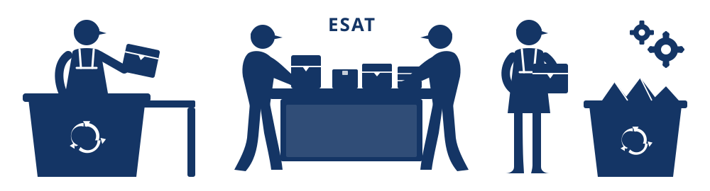

1. La Collecte
Livres
CD
DVD
Jeux Vidéo
2. Le Tri Solidaire
réalisé par des travailleurs en situation de handicap avec l'aide d'ESAT

Inclusion sociale • Emploi valorisant et solidaire
3. Une Seconde Vie
50%
Revente
Solidaire (Boutique La Halle aux Artistes & en ligne dès 0,50€)
Solidaire (Boutique La Halle aux Artistes & en ligne dès 0,50€)
50%
Recyclage
Matière (Transformation locale en pâte à papier · Zéro Déchet)
Matière (Transformation locale en pâte à papier · Zéro Déchet)
+30 000
Articles
Sauvés & valorisés avec nos partenaires locaux
Sauvés & valorisés avec nos partenaires locaux